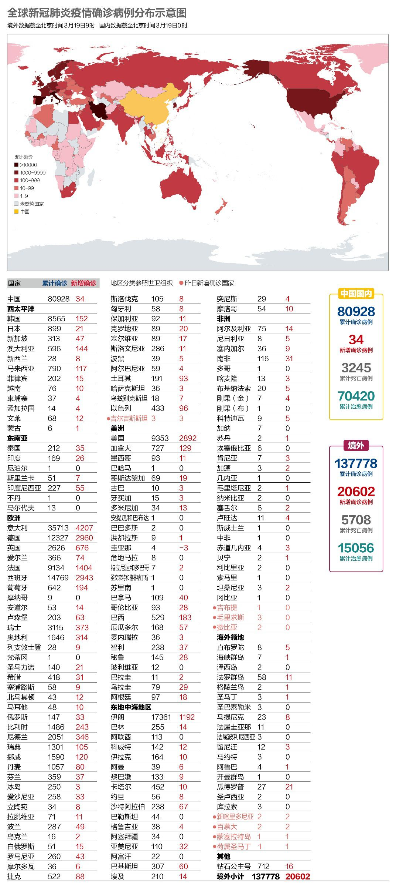
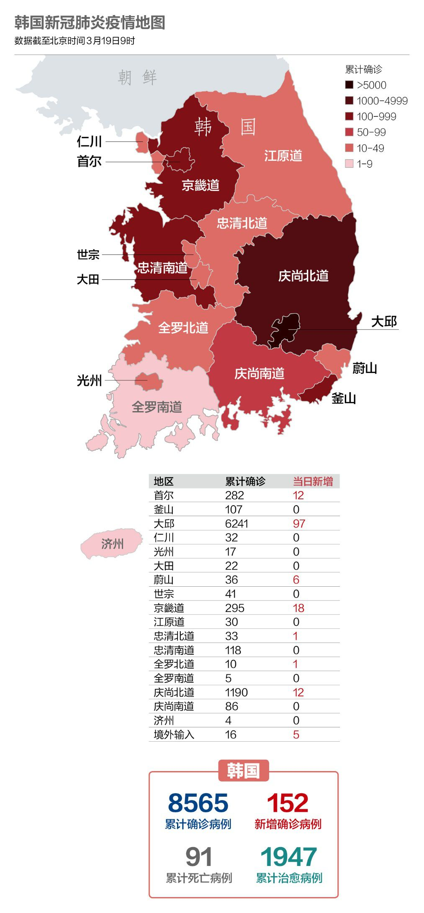

数说疫情0307：中国全力夺武汉，美国染疫州近半
原文链接 备份链接 国内31个省区市新增确诊降至两位数；全球累计确诊病例已破10万大关；意大利疫情最严重地区医疗资源已消耗殆尽 文 |《财经》数据研究员徐进 图 |《财经》视觉中心 编辑 | 郝洲 一、国内疫情防控形势继续向好，局面尽在 …

武汉新增归0，中央再次强调“全面恢复”正常生产生活秩序。海外新增超过2万例。美国将为全民提供免费筛查检测。德国面临“二战以来最大挑战”。意大利伦巴第地区仍有40%居民在外自由活动

文 |《财经》数据研究员 徐进
图 |《财经》视觉中心 编辑 | 郝洲
一、国内新增归0！中央继续强调有序推动复工复产
图1

今日国内简述：国内3月18日报告本地新增病例首次归0。武汉终于归0！武汉新增疑似、现有疑似亦为0。国内新增报告境外输入确诊病例34例。中央政治局常委会3月18日会议要求以省域为单元推动经济社会秩序恢复，所辖县区均为低风险的省份要“全面恢复”正常生产生活秩序。湖北省将采取差异化策略，分区分级、分类分时、有条件地开展复工复产。疫情发生以来，中国国家领导人参与了30余次外交互动，习主席指出，面对疫情，国际社会必须树立人类命运共同体意识，守望相助。
二、海外日增逾2万，世卫组织否定“中国病毒”之说
图2

海外新增病例达到20602例，集中在意大利、德国、西班牙、美国、法国和伊朗。海外累计死亡超过5000，又一个“悲剧性的里程碑”。
世界卫生组织3月18日说，应避免将新冠病毒称为“中国病毒”，这不利于团结合作共同抗击疫情。世卫组织卫生紧急项目负责人迈克尔·瑞安说，“2009年的（甲型）H1N1流感大流行起源于北美，我们没有称它为‘北美流感’。所以涉及其他病毒时，我们采用同样的命名方法是非常重要的。”
图3

意大利、德国、西班牙、美国都在快车道上。相比之下，法国控制的较好，有待后续观察。
图4

三、美国终于提供免费新冠病毒检测
图5

美国单日新增已接近3000，累计确诊病例接近1万大关。直接原因是大规模检测正在逐渐展开。3月18日，美国总统特朗普签署通过《家庭优先冠状病毒应急法》，它将为无保险者在内的所有人提供免费新冠肺炎筛查，并确保患者及家属能带薪休假，也将提供额外医疗援助，食物援助和失业救济，预计耗资超1000亿美元。
特朗普还说，即将签署《国防生产法案》（The Defense Production Act）。这一法案生效将有助于加速并扩展工业生产力，支持军事、能源、国土安全等工作的需要。国防部长埃斯柏称，国防部将从战略储备资源中释放500万个N95级别防疫口罩及其他个人防护用具；准备2,000个医用呼吸器；部署两艘医疗船为抗疫救治能力扩容，据称每艘医疗船能够放置1,000张病床。
四、德国面临“二战以来最大挑战”，意大利8.3%医护人员感染
图6

欧洲央行在3月18日晚举行一次非常规会议，决定启动7500亿欧元的临时资产购买计划，以应对新冠肺炎疫情给货币政策传输机制以及欧元区经济预期造成的重大风险。
德国总理默克尔（Angela Merkel）3月18日晚间罕见发表电视讲话，默克尔称，“自两德统一，不，自第二次世界大战以来，我们的国家还没有遇到过如此需要共同和团结行动的挑战。” 这次是默克尔近15年总理任期内极其罕见的电视讲话。此前她仅在每年新年夜以类似形式发表新年致辞。
中国国务院总理李克强3月18日晚同欧盟委员会主席冯德莱恩通电话。冯德莱恩称，目前欧方仍然急需采购防疫物资，希望中方继续予以协调支持。同时欧方愿为在欧盟国家的中国公民包括留学生提供必要的保障和便利。中国将为欧方通过商业渠道采购医疗物资提供便利。随后，冯德莱恩又录制了视频讲话，称中国没有忘记疫情在国内暴发时欧盟提供的帮助，迅速向欧盟捐助了50多吨防疫物资。
图7

据中新社报道，意大利紧急民防部部长、新冠肺炎疫情新闻发言人博雷利3月18日表示，意大利全国医疗工作者已有2629人确诊感染，达到了从业人员的8.3%，这些医务工作者正在接受隔离治疗。意大利全国各地的医院亟待解决卫生防护用品严重短缺现象。但是目前并不是所有意大利人都清楚疫情所带来的危机状况。在伦巴第地区，通过分析手机定位数据，可以看到至少有40%的民众仍在外面自由活动。意大利警方在上周累计共开出了17万张罚单，逾8000人遭到处罚，个别人或将面临刑事处罚。
当地时间3月18日，13人组成的中国第二批赴意大利抗疫医疗专家组和9吨医疗物资抵达米兰市，这批物资包括呼吸机、双通道输液泵、便携式彩超、实验室检测试剂和常用药品等。
五、韩国再爆集中感染事件
图8

韩国新增病例时隔5日之后反弹至三位数。新增的152例中，来自大邱市和庆尚北道的共109例，分别为97例和12例。大邱新增病例出现反弹主要是因为当地一家疗养医院发生医患集体感染。截至19日0时，韩国境内共有30.7024万人接受了病毒检测。
此外，韩国的境外输入病例也逐渐增多。据韩国卫生部门统计，3月13日-17日边境检疫发现的确诊病例共计16人。韩国政府目前正在讨论采取额外措施，防止入境时无症状的感染旅客进入社区。
六、伊朗在疫情中迎接新年
图9

伊朗明天将迎来波斯新年假期，据称德黑兰市集依然人来人往。
为帮助伊朗抗击新型冠状病毒肺炎疫情，中国军队向伊朗武装力量紧急提供核酸检测试剂盒、防护服和一次性医用外科口罩等医疗物资已于3月19日运抵伊朗。
【特别说明：以上统计，2月28日前为世卫组织官方统计数据，数据截止时间为北京时间每日17时；从2月28日开始，数据由《财经》根据公开资料统计，截止时间为北京时间每日9时】
七、全球疫情数字速览：
1、【美国Q2衰退14%】摩根大通美国首席经济学家迈克尔·费罗利（Michael Feroli）表示，2020年美国国内生产总值（GDP）将萎缩1.5%，二季度可能萎缩14%。这是迄今为止针对新冠病毒疫情对美国经济的影响作出的最悲观预测之一。费罗利说，这还是在假设美联储将继续寻找“创造性”的方式来支撑经济，而特朗普政府和国会将提供1万亿美元财政支持的情况下。
2、【全球一半学生停课】截至3月17日，全球已有逾8.5亿儿童和青少年因新冠肺炎疫情而停课，人数约为全球总学生数的一半。据联合国教科文组织网站消息，全球已有102个国家和地区全面停课，另有11个国家和地区局部停课。这意味着，短期之内面临学校停课的学生人数翻了一番，预计这一数字还将继续增长。
小结：武汉新增归0，中央再次强调“全面恢复”正常生产生活秩序。海外新增超过2万例。美国将为全民提供免费筛查检测。中国向欧盟捐助50多吨防疫物资。意大利伦巴第地区仍有40%居民在外自由活动。

▲点击图片查看更多疫情报道
责编 | 阮璐阳 luyangruan@caijing.com.cn
本文为《财经》杂志原创文章，未经授权不得转载或建立镜像。如需转载，请在文末留言申请并获取授权。
原文链接 备份链接 国内31个省区市新增确诊降至两位数；全球累计确诊病例已破10万大关；意大利疫情最严重地区医疗资源已消耗殆尽 文 |《财经》数据研究员徐进 图 |《财经》视觉中心 编辑 | 郝洲 一、国内疫情防控形势继续向好，局面尽在 …
原文链接 备份链接 国内单日新增病例有望很快落到两位数，全国治愈率跨过60%节点。新冠疫情在海外大部分国家和地区（包括美国）还处于暴发的早期阶段。 文 |《财经》数据研究员徐进 图 |《财经》视觉中心 编辑 | 郝洲 一、 国内多地迎来 …
原文链接 备份链接 湖北现有疑似清零。多省发现回国人员中存在无症状感染者，“外防输入”形势仍然较为严峻。美国新增迅速逼近2000例。美、韩均计划直接向民众发放现金以度过困难时期 文 |《财经》数据研究员 徐进 图 |《财经》视觉中心 编 …
原文链接 备份链接 应广大网友们呼吁，今天小编又给大家准备了想看的分析内容。国内新增期待完全归零。美国疫情蔓延日益严重，正在加速进入受关注名单。欧洲多国加强管控措施 文 | 《财经》数据研究员徐进 图 | 《财经》视觉中心 编辑 | 郝 …
原文链接 备份链接 意大利迎来最“伤心的”一天，目前全国病死率高达4.96%，为全球最高。韩国病死率约为0.70%，疫情已经稳定 文 | 《财经》数据研究员 徐进 图 | 《财经》视觉中心 编辑 | 郝洲 一、国内为进一步复工做准备 今 …